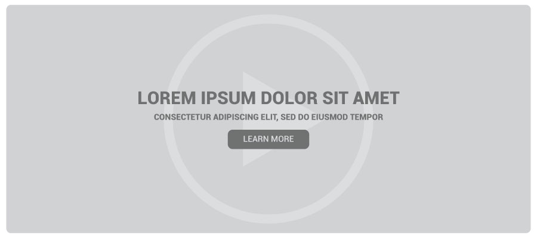

Expandable Search Bar
What do I hope to learn about this component?
I have had very little experience designing and developing a fully functional search bar for a website. Throughout this course, I would like to know how to build a search bar that is both functional and aesthetically pleasing. Apple's search function, for example, expands the search input field when the user clicks on the search icon. This temporarily removes the header navigation, allowing the user to easily focus on the task at hand.
How does this relate to what I've learned in WDD?
For large websites, a search function is one of the most fundamental components to have. It allows users to quickly find what they need. An ideal search bar goes beyond its basic functions and enhances user experience.
Example Source: Apple
Sticky Header
What do I hope to learn about this component?
I've had some practice creating static headers. However, I would like more practice with sticky headers - navigation menus that remain visible whilst scrolling down the page. I'd also like to expand upon this component and give the user the freedom to hide the header when he/she doesn't need it and reveal it when he/she does.
How does this relate to what I've learned in WDD?
Navigation headers are essential to any website. Now that scrolling websites are becoming more commonplace, especially on mobile devices, it's important to have a navigation header readily available whenever the user needs to access it. Keeping a header fixed at the top, regardless of scrolling, allows users to access different sections of a website without having to worry about straying too far or scrolling to far down.
Example Source: Visage

Video CTA
What do I hope to learn about this component?
I am very interested in building a video CTA. It's a rising trend with web design and has proven to be more compelling and attention grabbing than static images. I want to learn how to create a video CTA that is visually striking, yet not too overhelming or distracting. I also know that, from past experience, video media tend to be a lot heavier. I'd like to learn how industry websites build video CTAs that are lightweight, responsive, and load quickly in the browser on each device.
How does this relate to what I've learned in WDD?
We've been focusing a lot on building effective CTAs, particularly with my design classes. CTAs are known to be attention-grabbing and encourage users to take the particular action we are asking for. Full width video CTAs take it a step further and allow websites to dynamically illustrate a message or story.
Numerous studies show that using videos on sites boost conversion rates. Videos are easier to consume, absorb, and understand than reading actual text.
How might I build this?
- Build a component using
section tag.
- Embed video using the
video tag.
- Overlay text and buttons using
H1, p, and button tags.
Example Source: Hammerhead

Responsive Breakpoints
What do I hope to learn about this component?
Responsive design is the new standard and, while I've had experience working with it, I'd like to learn more and master the fundamentals. I would like more experience with building responsive components at different breakpoints.
How does this relate to what I've learned in WDD?
The concept of responsive design has been heavily discussed in each course within the WDD degree program. As an aspiring web designer, I am expected to build websites that translate perfectly on almost every device. Experimenting with different breakpoints will allow me to get a better understanding of how I can organize my content in a way that makes sense to the user, regardless of which device is in use.
Empty States - 404 Error Page
What do I hope to learn about this component?
Designing for empty states, such as an empty shopping cart or a 404 page is rarely ever thought of, yet so crucial to user experience. Many websites spend additional time customizing a 404 error page that turns a generally unpleasant experience into a rather enjoyable one. Exceptional 404 pages not only lead the user back in the right direction, they also make the user forget there was an error.
How does this relate to what I've learned in WDD?
Empty states weren't covered in any of my classes yet, however, user experience is regularly discussed as highly important. Building a custom and creative 404 page adds to user experience and helps the user get back on track.
Example Source: Tripomatic